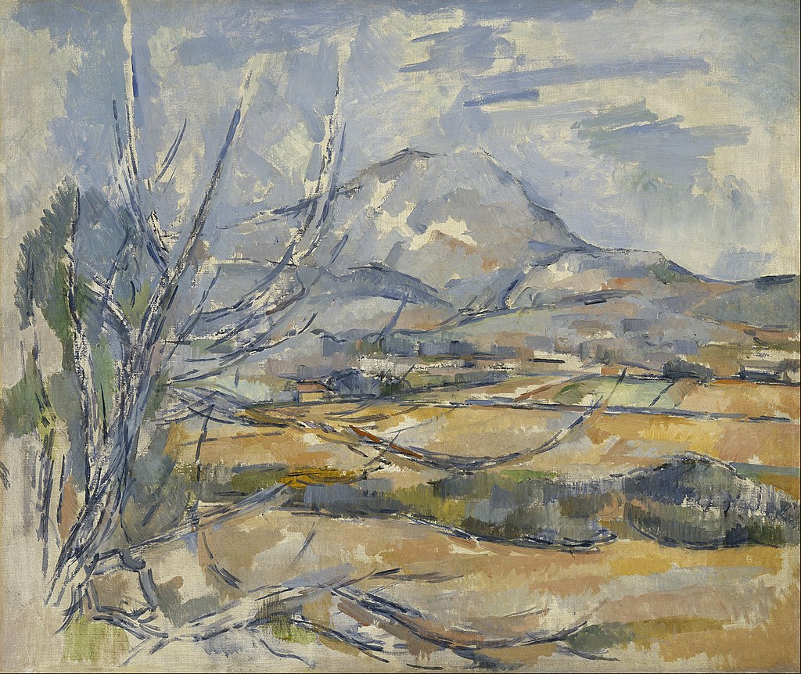

<head>
<meta charset="UTF-8" />
<meta name="keywords" content="drawing, painting" />
<meta name="description" content="drawings by Sunjy" />
<title>Sunjy</title>
<link rel="shortcut icon" type="image/x-icon" href="../../mImages/mCommon/favicon.ico" media="screen" />
<link rel="stylesheet" type="text/css" href="../../mCsses/mCommon/mCssA.css" />
<link rel="stylesheet" type="text/css" href="../../mCsses/mCommon/mCssB.css" />
<link rel="stylesheet" type="text/css" href="../../mCsses/mCommon/mCssC.css" />
<link rel="stylesheet" type="text/css" href="../../mCsses/mCommon/mCssD.css" />
<link rel="stylesheet" type="text/css" href="../../mCsses/mContent/mCssA.css" />
<link rel="stylesheet" type="text/css" href="../../mCsses/mContent/mCssB.css" />
<link rel="stylesheet" type="text/css" href="../../mCsses/mContent/mCssC.css" />
<link rel="stylesheet" type="text/css" href="../../mCsses/mContent/mCssD.css" />
</head>
<script type="text/javascript" src="../../mScripts/mContent/mContentAA.js" /></script>
<script type="text/javascript" src="../../mScripts/mContent/mContentAB.js" /></script>
<script type="text/javascript" src="../../mScripts/mContent/mContentAC.js" /></script>
<script type="text/javascript" src="../../mScripts/mContent/mContentAD.js" /></script>
<script type="text/javascript"></script> 
<script type="text/javascript">
document.write('<div class="mImgAbsolute"></div>');
/*
document.write('<p class="mFontSizeBColor" />From a white paper...</p>');
document.write('<table class="center"><tr><td>');
document.write('');
document.write('</td></tr></table>');
*/
</script>


<script type="text/javascript">
document.write('<p class="mFontSizeBColor" />Montagne Sainte-Victoire</p>');
document.write('<p class="mFontSizeSColor" />“Montagne Sainte-Victoire” by Paul Cézanne was one of Cézanne’s favorite subjects. He never tired of exploring its structure and changing appearance.<br><br>This picture unfinished state provides some insight into Cézanne’s working method and his ‘constructive’ brushwork.<br><br>Foreground foliage, undulating fields, the distant mountain, and sky have emerged gradually from a harmonious patchwork of colors applied across the canvas.<br><br>The Montagne Sainte-Victoire, with its cragged broken top, stands east of Cézanne’s home town, Aix-en-Provence.  For Paul Cézanne, it came to symbolize his home and the landscapes of his home Provence.<br><br>Cézanne’s landscape is based on his vantage point, eight miles west of Aix, over the valley of the Arc.<br></p>');
document.write('<table class="center" /><tr><td>');
document.write('<br>This picture unfinished state provides some insight into Cézanne’s working method and his ‘constructive’ brushwork.<br><br>Foreground foliage, undulating fields, the distant mountain, and sky have emerged gradually from a harmonious patchwork of colors applied across the canvas.<br><br>The Montagne Sainte-Victoire, with its cragged broken top, stands east of Cézanne’s home town, Aix-en-Provence.  For Paul Cézanne, it came to symbolize his home and the landscapes of his home Provence.<br><br>Cézanne’s landscape is based on his vantage point, eight miles west of Aix, over the valley of the Arc.<br>" />');
document.write('</td></tr></table>');
</script>


